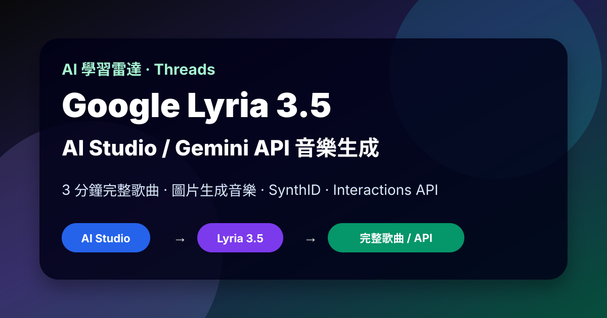

Threads｜AI郵報：Google Lyria 3.5 在 AI Studio 與 Gemini API 開放，完整歌曲生成進入產品化

一句話摘要
AI郵報這則 Threads 串文把 Lyria 3.5 定位成 Google 正式進入 Suno / Udio 競爭帶的訊號：不只是生成短 BGM，而是開始支援幾分鐘的完整歌曲、主歌/副歌/Bridge 結構、人聲歌唱、圖片導引音樂與 API 整合。官方文件證實核心能力，但也明確指出目前仍是單輪生成，不支援多輪局部修補；版權、歌手聲音模仿與 AI 音訊標示也有安全限制。
來源脈絡
| 欄位 | 內容 |
|---|---|
| Threads 分享連結 | https://www.threads.com/share/BAVy1oxFOi/ |
| Canonical Threads | https://www.threads.com/@aiposthub/post/Dc49CUSgfgw |
| 作者 | AI郵報（@aiposthub） |
| 相關文章 | https://www.aiposthub.com/google-lyria-3-5-music-generation-guide/ |
| 可見互動 | 約 1.6 萬次瀏覽、234 likes、12 replies、31 reposts、188 shares（Threads 顯示值） |
| 主題 | Google AI Studio / Gemini API / Lyria 3.5 / AI 音樂生成 |
Threads 可見文字重點：
> Google 這次真的要來搶 Suno、Udio 的飯碗了 😱
Google AI Studio 正式開放全新音樂生成模型：「Lyria 3.5」。一次可以直接生出最長 3 分鐘的完整歌曲，而且有主歌、副歌、Bridge，甚至可以唱歌。後續串文整理：44.1 kHz 立體聲、最長 3 分鐘、更自然的人聲與咬字、支援 Verse / Chorus / Bridge、可用最多 10 張圖片生成音樂；可透過 Gemini App、Google AI Studio、Gemini API 使用；Lyria 產出音訊會帶 SynthID 浮水印，並阻擋模仿名歌手聲音或受版權保護歌詞。
AI郵報文章重點
AI郵報文章〈Google AI Studio 正式上線 Lyria 3.5 音樂生成模型〉把這次更新整理成幾個關鍵：
- Lyria 3.5 由 Google DeepMind 音樂生成模型演進而來。
- 強調 44.1 kHz 立體聲、較完整的歌曲結構、更自然的人聲與咬字。
- 支援 Verse、Chorus、Bridge、Intro、Outro 等結構標記。
- 支援圖片導引音樂：可以用分鏡、概念圖、照片等視覺素材引導氛圍。
- 存取管道包括 Gemini App、Google AI Studio、Gemini API / Interactions API。
- 與 Suno / Udio 相比，Lyria 3.5 現階段偏「prompt → 直接生成完整曲」，尚未取代 stems 分軌、inpainting 或 DAW 式細修流程。
Google 官方文件交叉驗證
Google AI for Developers 的 Lyria 3.5 文件確認：
- Lyria 3.5 可透過 Gemini API 使用。
- 可根據文字提示或圖片生成 44.1 kHz 立體聲音訊。
- `lyria-3-clip-preview` 適合 30 秒短片、循環與預覽；`lyria-3.5` 適合包含主歌、副歌、橋段的完整歌曲。
- 兩款模型皆透過新的 Interactions API 使用，支援文字與圖片的多模態輸入。
- Lyria 3.5 預設輸出 MP3，也可設定 `response_format` 要求 WAV。
- 回應可能包含歌詞、歌曲結構 JSON 與 Base64 音訊內容。
- 可以上傳最多 10 張圖片作為視覺參考，讓模型根據畫面氣氛生成音樂。
- 可以在 prompt 中提供自訂歌詞，並用 `[Verse]`、`[Chorus]`、`[Bridge]` 等標記輔助結構。
- 可以用時間戳記控制歌曲在特定時間段的事件，例如 Intro、Verse、Chorus、Outro。
- Lyria 3.5 會用提示語言生成歌詞。
官方文件：
https://ai.google.dev/gemini-api/docs/music-generation?hl=zh-tw
重要限制與安全設計
Google 官方文件也明確列出限制：
- 所有提示都會經過安全篩選；包含要求特定藝人聲音、或生成受著作權保護歌詞的提示可能被封鎖。
- 所有生成音訊都會加入 SynthID 音訊浮水印，便於辨識 AI 生成內容。
- Lyria 3.5 目前是單輪生成流程，不支援用多個提示反覆局部編輯或修正片段。
- 片段模型固定 30 秒；Pro / Lyria 3.5 會生成幾分鐘歌曲，但實際時長仍取決於提示。
- 即使用相同提示，每次生成結果也可能不同，並非 deterministic。
與 Suno / Udio 的差異觀察
這則串文說「Google 要搶 Suno、Udio 飯碗」可以視為社群化說法；更精準的理解是：
| 工具 / 路線 | 強項 | 目前仍需注意 |
|---|---|---|
| Lyria 3.5 | Google 生態系、AI Studio、Gemini API、圖片導引、SynthID、企業整合想像 | 單輪生成、局部重做與 DAW 細修不足、地區/方案/價格可能變動 |
| Suno | 消費端創作成熟、歌曲生成與社群流通強 | 商用授權、分軌、改寫能力與平台條款需逐案確認 |
| Udio | Inpainting / 局部修改等音樂創作控制更強 | 專業流程仍需混音、授權、素材與發布檢查 |
為什麼值得收進 AI 學習雷達
- AI 音樂從玩具 demo 走向 API / 產品化，開始能被接進影片工具、遊戲引擎、Podcast、廣告素材與自動化剪輯流程。
- 圖片生成音樂讓「分鏡 → 配樂」的 workflow 更直觀，對短影音、課程、遊戲與展演都有價值。
- SynthID 與特定歌手聲音封鎖顯示 Google 走企業合規路線，和純創作者工具的產品策略不同。
- 這補上了 Gemini 生態的音訊生成拼圖：文字、圖片、影片、語音、音樂逐漸可以在同一套 API / Studio 中串接。
實務導入檢核表
- 先用 `lyria-3-clip-preview` 生成 30 秒短片，快速迭代風格、BPM、情緒與樂器。
- 確認方向後再用 `lyria-3.5` 生成完整歌曲。
- Prompt 要包含：曲風、樂器、BPM、調性、情緒、語言、是否人聲、Verse / Chorus / Bridge 結構。
- 若用圖片生成音樂，確認圖片本身有授權，且不要上傳含敏感個資或未公開素材的分鏡圖。
- 商用前要確認 Google / Gemini API 方案、價格、地區可用性、輸出授權與平台規範。
- YouTube、Podcast、課程、廣告發布時，保留 prompt、生成時間、版本、授權紀錄與人工審聽紀錄。
- 不要要求模型模仿特定歌手、使用受版權保護歌詞，或把生成音樂冒充真人創作。
原始連結
Threads：
https://www.threads.com/@aiposthub/post/Dc49CUSgfgw
AI郵報文章：
https://www.aiposthub.com/google-lyria-3-5-music-generation-guide/
Google Lyria 3.5 官方文件：
https://ai.google.dev/gemini-api/docs/music-generation?hl=zh-tw
Google AI Studio：